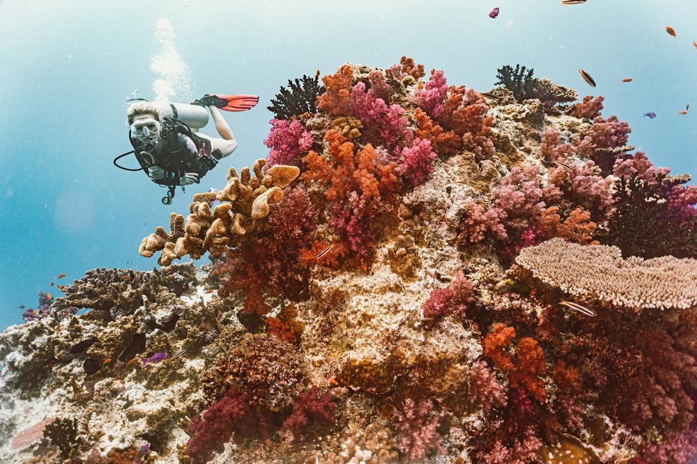
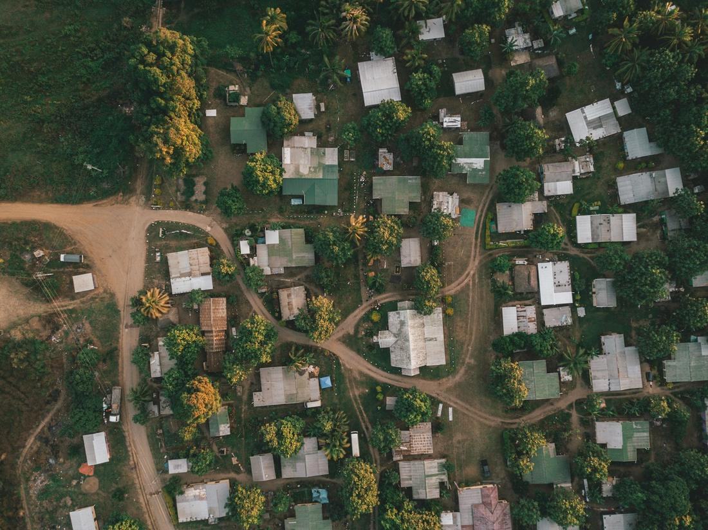

Turquoise lagoons, warm Bula smiles, and island time that resets your whole soul.
If you ask me what a real escape looks like, I picture Fiji every time. This is a nation of more than 300 islands scattered across the South Pacific, and it has built an entire culture around making guests feel like family the moment they step off the plane. The 'Bula' spirit is not a marketing slogan, it is genuinely how Fijians greet the world, and it changes the whole tone of a vacation before your bags even hit the resort.
What I love most about Fiji as your travel advisor is how much range it has packed into one destination. You can spend a morning drifting over some of the most vibrant coral reefs on the planet, an afternoon learning how a village still lives by kava ceremony and handwoven mats, and an evening watching the sun drop into a lagoon from your own private deck. It rarely feels crowded, the flights from the West Coast are surprisingly manageable, and the honeymoon reputation is earned twice over.
So whether you are planning a honeymoon, a milestone anniversary, or a bucket-list family trip, here are three excursions I love arranging for clients heading to Fiji.

This is the Fiji people picture when they daydream about it: a genuine overwater bungalow perched above a glassy lagoon, palm trees swaying just past the deck railing. Fiji does not have the overwater bungalow density you find in Bora Bora, which is exactly why I steer honeymooners toward Malolo Island in the Mamanuca group, home to some of the only true overwater villas in the country. I build the day around slow mornings, with coffee delivered by boat and reef fish visible right beneath your feet, then ease into a private sandbar picnic at low tide, where the boat drops you on a strip of sand that disappears with the changing tide and picks you back up hours later. In the afternoon I love adding a couples' spa treatment in an oceanfront bure, followed by a sunset ride on a traditional bilibili bamboo raft along the shallows. Dinner happens barefoot, feet in the sand, with the whole sky doing its gold-and-pink routine over the water. This is the package I build for couples who want their vacation photos to look unreal and their actual experience to feel even better, with nothing on the agenda except each other and the tide.

For clients who want their Fiji trip to have a pulse, this is the package I build first. Taveuni Island sits across the Somosomo Strait from Vanua Levu, and the reef running between them, appropriately nicknamed Rainbow Reef, is one of the most celebrated soft coral dive sites on earth, with underwater walls exploding in reds, purples, and oranges that you genuinely do not see anywhere else. I arrange guided dives and snorkel trips there for clients based in the north, while for those staying around Nadi or the Mamanucas, I love pairing a South Sea Cruises day trip out to a floating sandbar with snorkeling around islands like Monuriki, the real-life setting of the film Cast Away. For the adrenaline crowd, I will add on a shark dive in Beqa Lagoon near Pacific Harbour, where bull sharks and reef sharks circle in some of the clearest water in the South Pacific. Whichever version we build, the day is about spending hours in the water surrounded by fish, turtles, and coral instead of just looking at it from a beach chair, then drying off on a private sandbar with a cold drink in hand.

This is the excursion I push hardest for clients who tell me they want to actually understand a place, not just photograph it. Along Fiji's Coral Coast, on the main island of Viti Levu, I arrange visits to traditional villages where guests are formally welcomed with a kava ceremony, the earthy, slightly numbing ceremonial drink that Fijians have shared with guests for generations. It is not a performance staged for tourists, it is a genuine cultural exchange, and the village elders take real pride in explaining the meaning behind it. From there we head into the rainforest for a gentle trek to Biausevu Waterfall, where you can swim in the plunge pool beneath the falls, cooling off in a setting most visitors never see from their resort. I round the day out with a bilibili bamboo raft ride down the Sigatoka River, a demonstration of traditional mat and tapa cloth weaving, and, when timing allows, a meke performance with dancing and fire that will genuinely give you chills. Families love this one because it slows everyone down and gives kids a real sense of place beyond the pool.